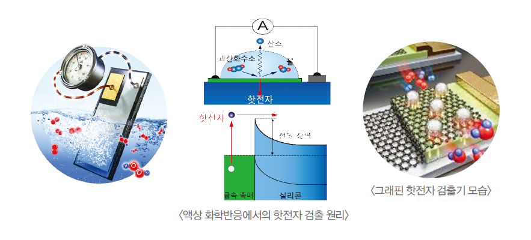

주제별 연구성과
주제별 연구성과
KAIST RESEARCH ACHIEVEMENTS
나노 촉매 핫전자 소자
EEWS대학원 박정영
요약
핫전자란 촉매표면의 자유전자가 화학반응 과정에서 에너지를 얻어 여기된 전자를 일컫는 말로 촉매반응 매커니즘을 결정하는 핵심요소로 알려져 있다. 그러나 기술적 한계로 인해 촉매표면에서 순간적으로 발생했다 사라지는 핫전자를 직접 관찰하고 분석하는 데에는 어려움이 있었다. 본 연구에서는 이러한 한계를 극복하기 위해 나노 촉매금속과 반도체를 접합하여 만든 새로운 ‘나노촉매 핫전자 소자’를 개발하여 상압 및 액상 화학반응 중 촉매표면에서 발생한 핫전자를 실시간으로 검출하는데 성공하였다. 본 제안 기술은 복잡한 촉매반응 매커니즘을 규명하고, 고효율 차세대 촉매물질을 개발하는데 응용 가능하다.
연구배경
촉매는 화학반응에 관여해 반응속도를 조절할 수 있는 물질로, 원유 정제, 플라스틱 합성 등과 같은 다양한 화학산업에서 화학공정의 반응 효율을 높여 작업시간을 줄이고 비용을 낮춰주는 핵심적인 부분이다. 최근에는 청정 동력원으로 떠오른 수소연료전지, 인공광합성 장치 등 차세대 에너지기술영역에서도 큰 역할이 기대되고 있다. 따라서 학계에서는 고효율·저비용·친환경 촉매를 개발하기 위해서 촉매반응 메커니즘, 즉, 원자 및 분자적 수준의 표면 화학에너지 전환과정 규명을 위한 연구가 활발히 진행되고 있다. 선행연구들을 통해 전기적 에너지 전환과정에서 발생한 ‘핫전자’가 화학 반응에 영향을 준다는 것이 보고되었으나, 촉매 표면에서 순간적으로 발생하는 핫전자의 수명이 매우 짧아(펨토초, 1000조분의 1초) 이에 대한 정량적인 분석은 기술적 한계로 인해 이뤄지지 못했다.
연구내용
촉매반응 중 발생하는 핫전자의 거동을 확인하려는 기존의 시도들은 상용 화학공정과 다른 고진공 환경에서 고가장비를 이용하여 이루어졌다. 금속 촉매 표면에서 화학에너지에 의해 여기된 핫전자는 전자-전자 산란이나 전자-포논 산란에 의해 매우 빠른 속도로 그 에너지를 잃고 평형상태로 돌아가기 때문이다. 본 연구에서는 나노 촉매금속과 반도체를 접합하여 만든 ‘나노촉매 핫전자 소자’를 이용하여, 상압 및 액상 촉매반응 중 생성된 핫전자를 직접 검출하는데 성공했다. 이를 위해 ‘나노촉매 핫전자 소자’의 금속-반도체 접합에서 두 물질의 계면에 형성된 전위 장벽이 핫전자를 검출할 수 있는 필터로 동작하는 원리를 이용했다. 특히 촉매 특성을 가지는 금속을 15 나노미터(1미터의 10억분의 1) 이하의 두께로 반도체 기판에 증착함으로써, 촉매금속 표면에서 화학반응 중 생성된 핫전자가 그 에너지를 잃기 전에 금속-반도체 접합에 형성된 낮은 전위 장벽을 넘어 탐지기 내부의 전기적 신호로 검출되도록 하였다. 이러한 효과로 고진공과 같은 특정 실험 환경이 아닌 촉매가 주로 사용되는 액상 화학반응 환경에서 핫전자를 실시간으로 관찰할 수 있었다. 따라서 금, 은, 백금과 같은 다양한 나노촉매 금속 박막에서 과산화수소가 물과 산소로 분해 되는 액상반응이 일어날 때, 생성된 산소 기체를 기체 크로마토그래피로 관찰하는 동시에 핫전자의 전기적 신호를 실시간으로 검출 및 분석함으로써, 화학반응 중 발생한 핫전자와 촉매활성도간의 상관관계를 정량적으로 규명하였다. 뿐만 아니라 나노촉매 금속 박막의 두께와 과산화수소 수용액의 농도를 조절하여 실험한 결과가 과산화수소 환원반응의 반응 메커니즘을 고려하여 계산한 이론값과 일치하는 것을 확인하며, 액상 환경에서의 고체 촉매반응 원리 규명에 초석을 세웠다. 또한 본 연구에서는 나노입자 촉매에서 발생하는 핫전자를 정밀하게 관찰하기 위해 그래핀을 활용하여 새로운 ‘그래핀 핫전자 검출기’를 선보였다. 금속 박막 촉매와 달리 나노입자 촉매는 크기, 모양과 같은 구조적 인자에 따라 촉매 특성이 쉽게 변할 수 있어, 이에 따라 달라지는 핫전자 거동에 대한 이해가 중요하다. 그러나 박막 형태의 금속촉매로 이루어진 ‘촉매 핫전자 탐지기’와는 달리 나노입자 촉매에서의 핫전자 검출은 나노입자간의 전기적 연결이 어려워 측정에 한계가 있었다. 이러한 한계를 극복하기 위해 그 두께가 매우 얇고(0.2 나노미터), 전기적·열적·화학적 특성이 우수한 그래핀을 반도체 박막 위에 코팅한 후, 백금 나노입자 촉매를 이차원 단층으로 배열한 새로운 ‘그래핀 핫전자 검출기’를 개발, 상압 환경에서의 수소 산화반응 중 백금 나노입자 촉매 (4.5 나노미터) 표면에서 발생한 핫전자를 전기적 신호로 검출할 수 있었다. 온도와 수소분압에 따라 달라지는 핫전자의 검출량이 촉매활성도 변화추이와 동일한 경향을 나타냈으며, 핫전자의 정량적·이론적 분석을 통해 수소 산화반응의 메카니즘을 입증하였다. 또한 그래핀이 금속 나노입자 촉매와 반도체 사이의 계면저항을 낮춰, 핫전자의 검출효율을 46% 향상시킬 수 있음을 보였다. ‘나노촉매 핫전자 소자’는 상압 및 액상 화학반응 중 촉매 표면에서 발생하는 핫전자를 실시간으로 검출하는 새로운 측정 시스템으로, 핫전자가 촉매반응에 미치는 영향에 대한 직접적인 규명이 가능하다. 특히 고진공과 같은 제한된 실험 환경이 아닌 상압 및 액상 반응 하에서 고가의 장비 없이도 나노 촉매 종류에 따라 달라지는 핫전자의 거동을 가시적으로 관찰할 수 있다. 따라서 향후 고온·고압 환경에서 사용되는 촉매에서의 복잡한 화학반응 매커니즘을 분석하고, 고효율 차세대 촉매물질 개발하는 데 응용 가능할 것이다.
 그림 1. ‘나노촉매 핫전자 소자’ 및 ‘그래핀 핫전자 검출기’ 모식도
우수성과 및 기대효과
- 참고자료 [논문 1]는 안게반테 케미(Angewandte Chemi International Edition)의 표지(Front cover)논문으로 선정
- 참고자료 [논문 2]는 연구의 우수성을 인정받아 미국진공학회(AVS)의 호프만장학상 수상
- 참고자료 [논문 1]에 대하여 국내외 언론보도 14회
- 참고자료 [논문 2]에 대하여 국내외 언론보도 16회
- 고온·고압 환경에서 사용되는 차세대 촉매물질 개발뿐만 아니라 외부 바이어스를 이용한 스마트한 촉매반응 조절 시스템으로의 응용이 가능할 것으로 기대됨
참고자료
[논문1] Ievgen I. Nedrygailov, Changhwan Lee, Song Yi Moon, Hyosun Lee, and Jeong Young Park*, “Hot Electrons at Solid–Liquid Interfaces: A Large Chemoelectric Effect during the Catalytic Decomposition of Hydrogen Peroxide”, Angewandte Chemi International Edition, 55, 10859, (2016) [2015 Impact Factor = 11.709] (Front Cover)
[논문2] H. Lee, I. I. Nedrygailov, Young Keun Lee, Changhwan Lee, Hongkyw Choi, Jin Sik Choi, Choon-Gi Choi, and Jeong Young Park*, “Graphene-Semiconductor Catalytic Nanodiodes for Quantitative Detection of Hot Electrons Induced by a Chemical Reaction”, Nano Letters, 16, 1650, (2016) [2015 Impact Factor = 13.997]